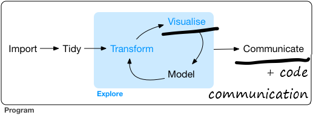

Chapter 2 Why read this?
2.1 Good data analysis starts with fast & intuitive EDA
Good Exploratory Data Analysis (EDA) is the foundation of most data work from data engineering to Kaggle Data Science competition winners.
Ideally, you can explore your data quickly and intuitively in a flow state. You become absorbed by the patterns and stories the exploration of your data reveals, not slowed by code errors and Google searches.
This book aims to help you explore data faster and with fewer errors. While at the same time to not compromise on code clarity and quality. Your quickly created code can still be easy to read and re-use with only three simple Code style rules to follow.
The following chapters describe a set of linked methods in a logical order. We start first with methods to explore and visualise data quickly before you select a plot to start the intense process of polishing your final plot. We will also cover how interactive plots can be part of that rapid exploration too. Finally, we will see how to create visually appealing tables, colour palettes, and three impactful HTML formats to present your work.
All the examples are aimed at beginners in R to those with an intermediate level of experience. However, even very experienced R users might pick up a new trick. And anyone can suggest an improvement or addition to this book as an issue.
Each section starts with a bare-bones code example that can become part of your fast Exploratory Data Analysis toolbox.
After each simple code example, a more sophsiticated version is provided in well-structured code. The more detailed examples you can use as a template to re-use for your final polished plots.
The book is my current approach to data visualisation in R. But my methods keep changing and improving from reading R-Bloggers and #rstats and Slack channels every day.
2.2 Is this Data Science?
The diagram below is the Data Science workflow from R for Data Science. I’ve underlined the parts of the Data Science process which this book aims to help you with, Visualise and Communicate.
I’ve also added “Code Communication” to emphasise how well laid out code is another essential part of communicating. Clear code should be easy to read and understand, re-use, and quality assure. You are also helping your future yourself in case you forget what you were trying to do.
Modelling is still an important part of both your data exploration and understanding and the overall Data Science process. The goal of modelling is described well in the R 4 Data Science modelling chapter:
“The goal of a model is to provide a simple low-dimensional summary of a dataset. Ideally, the model will capture true “signals” (i.e. patterns generated by the phenomenon of interest), and ignore “noise” (i.e. random variation that you’re not interested in)."
- Also, here is good example of modelling that conveniently uses the same Texas housing sales data we will use later in this book.

2.3 What about Python for data viz?
- Python is also a powerful data visualisation programming language. You will use packages such as Pandas, Seaborn, Matplotlib, and Bokeh. A good place to find similar data visualisation code examples to this book in Python are Kaggle notebooks. This link sets the filters at the top of the notebooks to show the most popular Python notebooks for visualisation. And here is the same link but filtering to the R language.
2.4 What about Point and Click data vis tools?
- Point and Click (PaC) tools like Excel, PowerBI and Tableau still have their place in EDA. As long as we understand their strengths and weaknesses compared to using code. Hadley Wickham compares PaC tools with code in this interview.
Point-and-click interfaces are great, because they lay out all of your options in front of you, and you don’t have to remember anything. You can navigate through the set of pre-supplied options. And that’s also it’s greatest weakness, because first of all, you are constrained into what the developer thought you should be able to do. And secondly, because your primary interaction is with a mouse, it’s very difficult to record what you did. And I think that’s a problem for science, because ideally you want to say how you actually got these results. And then simply do that reliably and have other people critique you on that. But it’s also really hard when you are learning, because when you have a problem, how do you communicate that problem to someone else? You basically have to say, “I clicked here, then I clicked here, then I clicked here, and I did this.” Or you make a screen cast, and it’s just clunky.
So, the advantages of programming languages like R or Python, is that the primary mechanism for communicating with the computer is text. And that is scary because there’s nothing like this blinking cursory in front of you; it doesn’t tell you what to do next. But it means you are unconstrained, because you can do anything you can imagine. And you have all these advantages of text, where if you have a problem with your code, you can copy and paste it into an email, you can Google it, you can check it and put it on GitHub, or you can share it by Twitter. There’s just so many advantages to the fact that the primary way you relate with a programming language is through code, which is just text. And so, as long as you are doing data analysis fairly regularly, I think all the advantages outweigh a point and click interface like Stata.
2.5 Find an R master to inspire you
- This book is just one set of ideas in a particular style. It’s not a rigid formula you must follow. Seek ideas and inspiration from a variety of people and books. Find your path in Data Science, data exploration, visualisation, and communication. Two people who have inspired me are David Robinson and Claus Wilke I describe below. I’ve also collected a series of R guides and galleries in a logical order I have found useful and inspiring.
2.5.1 David Robinson
I recommend watching any of David Robinson’s live coding Tidy Tuesday videos to improve your Data Science skills. Robinson explores, cleans and then analyses data in R rapidly and intuitively. Precisely what I’m trying to help you do with this book. Several methods I use in this book I saw Robinson do first on his videos.
While this book covers the exploration, visualisation and communication parts of Data Science, Robinson takes you through the complete R for Data Science workflow from import to communicate. And all in one hour (or less if you increase the playback speed to 1.5x). Amazingly Robinson has never seen the data he analyses before he starts. You get to witness how rapid it is possible to be doing Data Science in R.
2.5.2 Claus Wilke
Another R master in data vis and communication is Claus Wilke. He recently created a guide similar to this book. It starts with simple examples that become more complex. In his Practical ggplot2 guide, he begins with the bare minimum code you need to create the plot. He then gradually builds the code up layer by layer until it is publication quality.
Wilke wrote Practical ggplot2 to help people re-create some of the charts in his excellent Fundamentals of Data Visualization. This book offers a similar gradual method to Wilke’s but with a greater focus on exploratory data analysis. It also provides examples with more tools (particularly interactive ones) as well as recommending a clean code style.